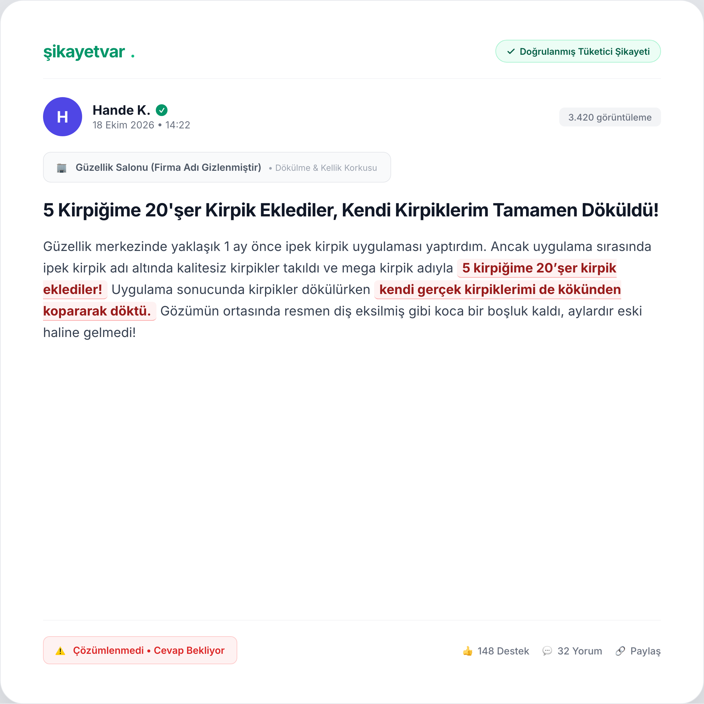
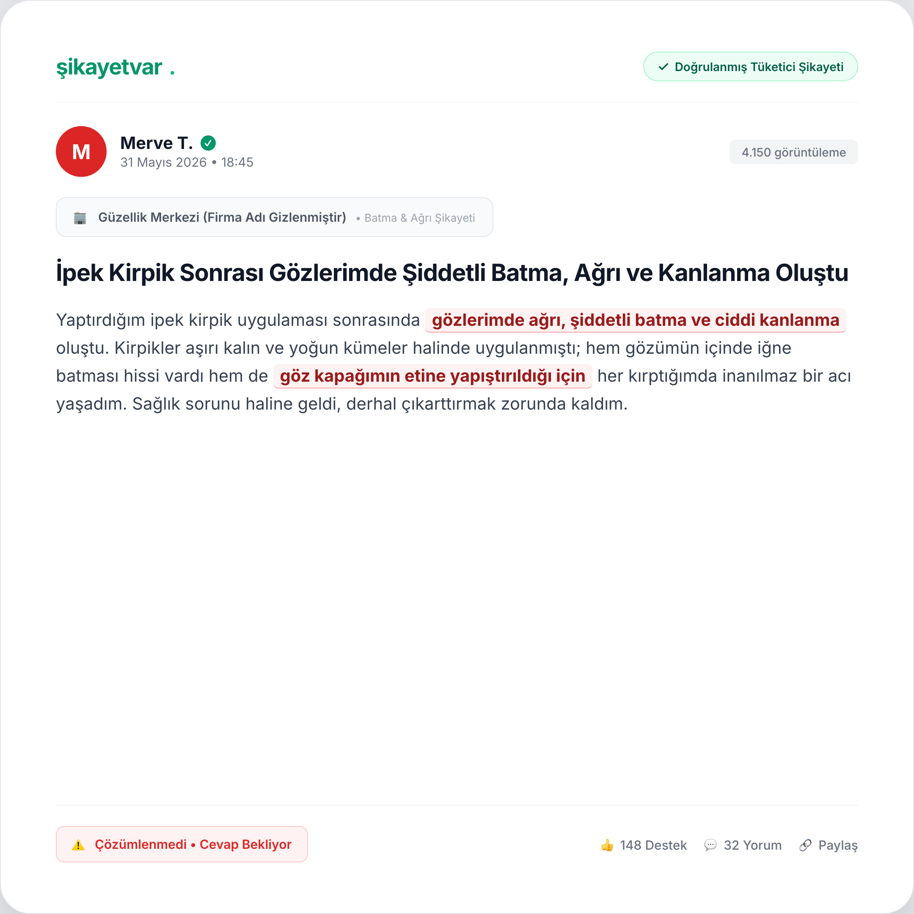
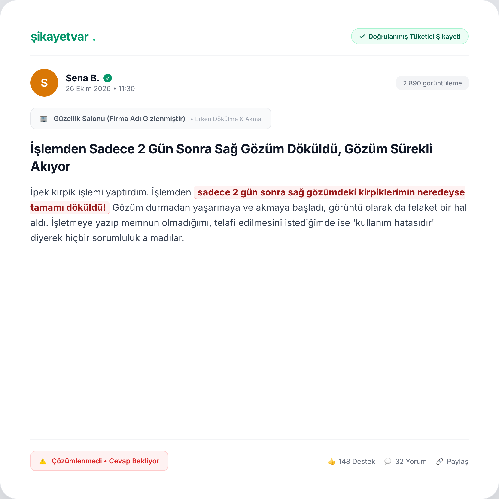
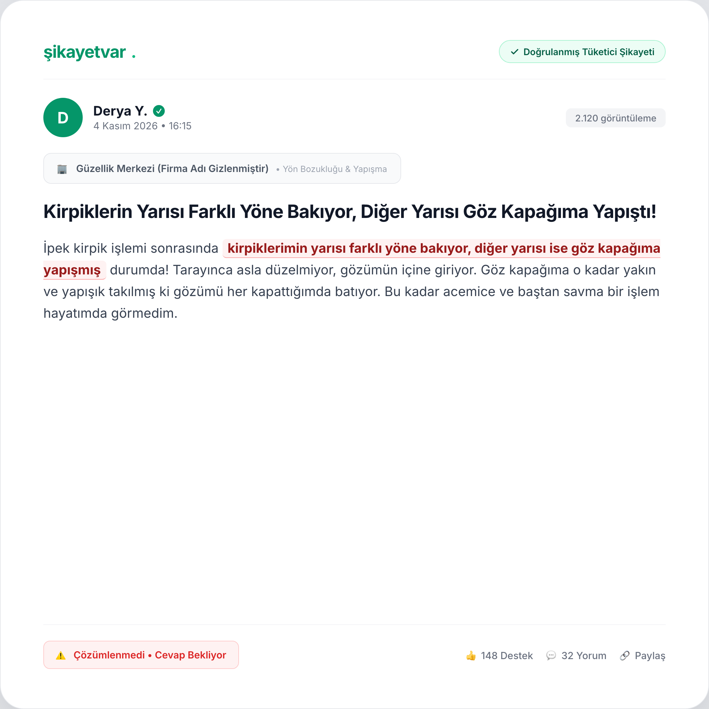
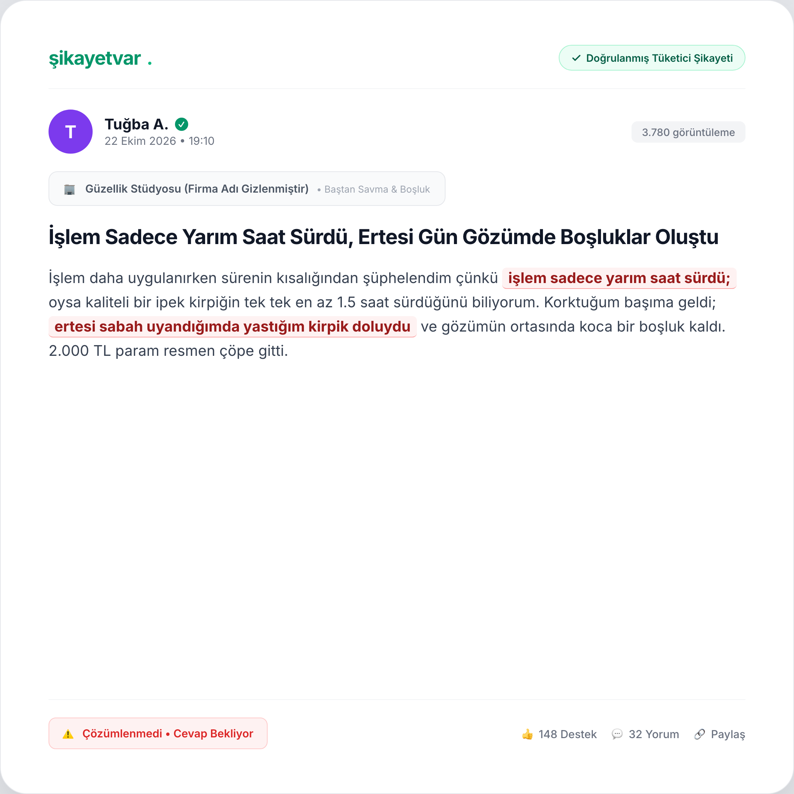
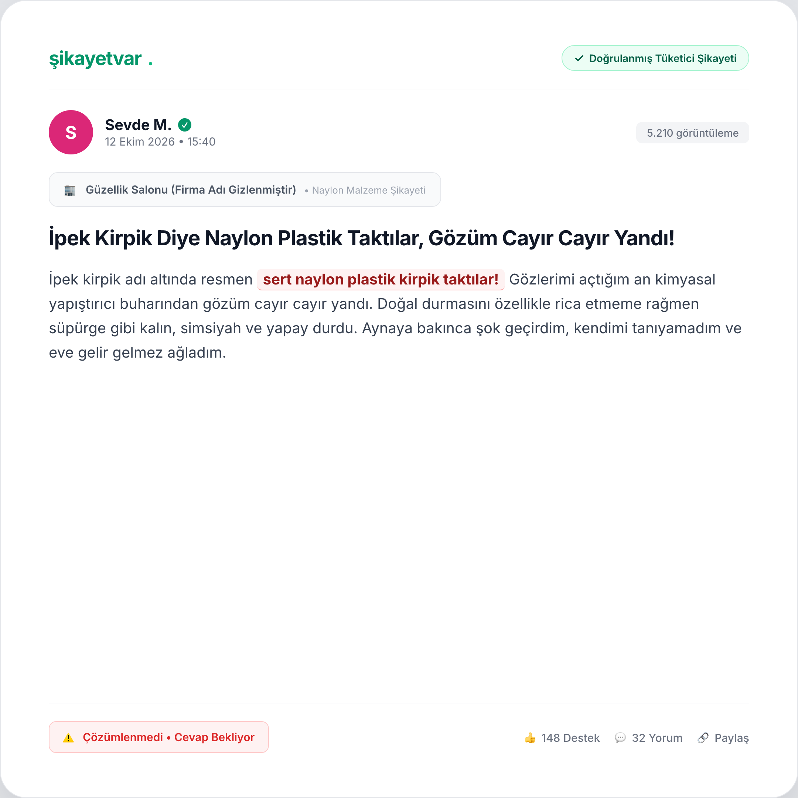
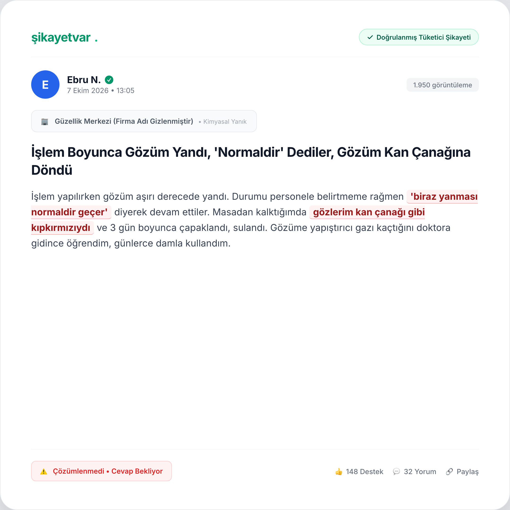
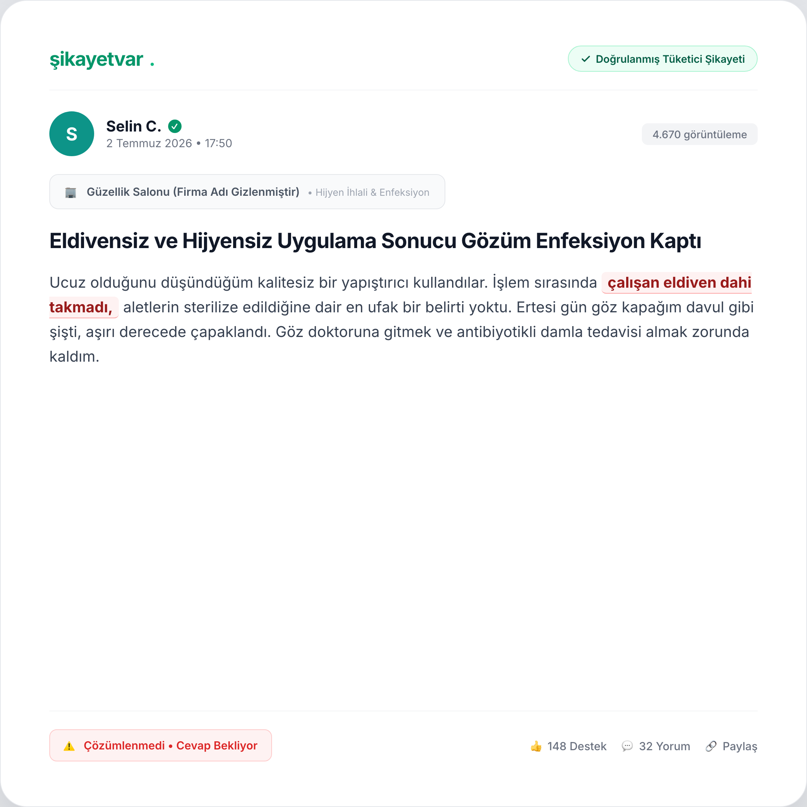

01. Demet Yapıştırma (Stickies) & Dökülme
"5 kirpiğime 20'şer kirpik eklediler, kendi kirpiklerim tamamen döküldü!"
⬇️ İndir

02. Şiddetli Batma & Kanlanma
"Göz kapağımın etine yapıştırıldığı için her kırptığımda bıçak batması gibi acı çektim."
⬇️ İndir

03. 2 Günde Dökülme & Göz Akması
"İşlemden 2 gün sonra sağ gözüm tamamen döküldü, gözüm sürekli akıyor."
⬇️ İndir

04. Yön Bozukluğu & Kapağa Yapışma
"Yarısı farklı yöne bakıyor, diğer yarısı göz kapağıma yapışmış durumda."
⬇️ İndir

05. Yarım Saatte Baştan Savma & Boşluk
"İşlem yarım saat sürdü, ertesi gün yastığım kirpik doluydu, gözümde boşluk kaldı."
⬇️ İndir

06. Naylon Plastik & Çayır Çayır Yanma
"İpek kirpik diye naylon plastik taktılar, gözüm cayır cayır yandı!"
⬇️ İndir

07. Kimyasal Gaz & Kan Çanağı
"'Biraz yanması normaldir' dediler, gözlerim kan çanağı gibi oldu, 3 gün çapaklandı."
⬇️ İndir

08. Hijyen İhlali & Göz Enfeksiyonu
"Çalışan eldiven dahi takmadı, ertesi gün göz kapağım şişti, antibiyotikli damla aldım."
⬇️ İndir